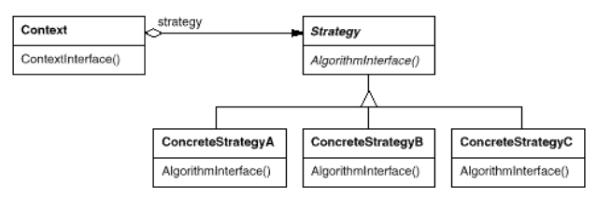
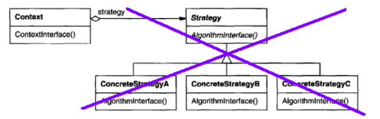
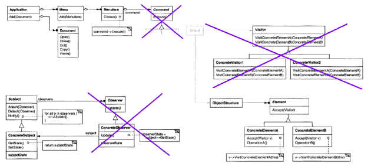
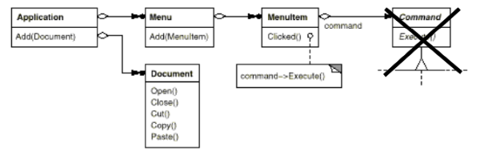
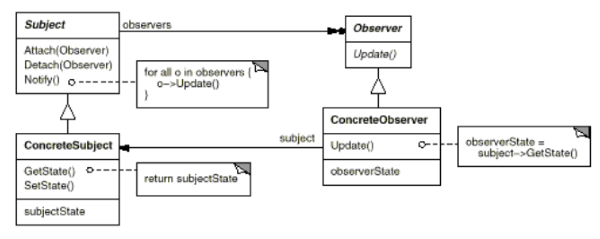
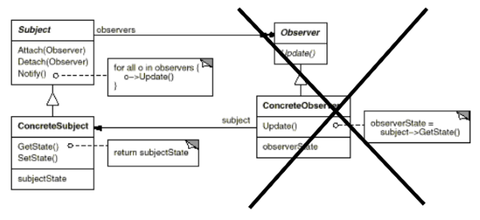
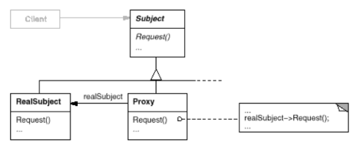
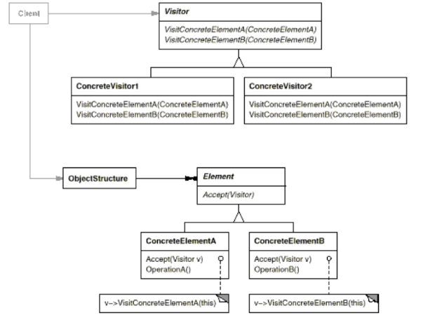
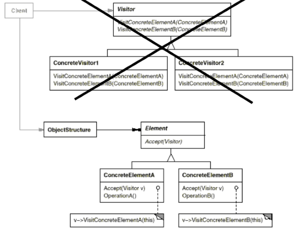

使用函数式编程来丰富面向对象编程的想法是陈旧的。将函数编程功能添加到面向对象的语言中会带来面向对象编程设计的好处。
一些旧的和不太老的语言，具有函数式编程和面向对象的编程：
面向对象编程语言的实践包括函数编程技术的仿真：
功能编程和面向对象编程在不同的设计粒度级别上运行：
Threre至少有两个问题：
C＃提供了一个名为delegates的函数编程功能：
delegate string StringFunType(string s); // declaration
string G1(string s){ // a method whose type matches StringFunType
return "some string" + s;
}
StringFunType f1; // declaration of a delegate variable
f1 = G1; // direct method value assignment
f1("some string"); // application of the delegate variable代表是一流的价值观。这意味着委托类型可以键入方法参数，并且委托可以作为任何其他值的参数传递：
string Gf1(StringFunType f, string s){ [ ... ] } // delegate f as a parameter
Console.WriteLine(Gf1(G1, "Boo")); // call代理可以作为方法的计算返回。例如，假设G是一个string => string类型的方法，并在SomeClass中实现：
StringFunType Gf2(){ // delegate as a return value
[ ... ]
return (new SomeClass()).G;
}
Console.WriteLine(Gf2()("Boo")); // call代表可以进入数据结构：
var l = new LinkedList<StringFunType>(); // list of delegates
[ ... ]
l.AddFirst(G1) ; // insertion of a delegate in the list
Console.WriteLine(l.First.Value("Boo")); // extract and callC＃代表可能是匿名的：
delegate(string s){ return s + "some string"; };匿名委托看起来更像lambda表达式：
s => { return s + "some string"; };
s => s + "some string";扩展方法使程序员能够在不创建新派生类的情况下向现有类添加方法：
static int SimpleWordCount(this string str){
return str.Split(new char[]{' '}).Length;
}
string s1 = "some chain";
s1.SimpleWordCount(); // usable as a String method
SimpleWordCount(s1); // also usable as a standalone method扩展方法的另一个例子：
static IEnumerable<T> MySort<T>(this IEnumerable<T> obj) where T:IComparable<T>{
[ ... ]
}
List<int> someList = [ ... ];
someList.MySort();扩展方法在C＃中有严格的限制：
C＃为arity提供功能和程序通用委托预定义类型，最多16个：
delegate TResult Func<TResult>();
delegate TResult Func<T, TResult>(T a1);
delegate TResult Func<T1, T2, TResult>(T1 a1, T2 a2);
delegate void Action<T>(T a1);
[ ... ]委托本身可以包含委托的调用列表。调用此委托时，委托中包含的方法将按它们在列表中出现的顺序调用。结果值由列表中调用的最后一个方法确定。
C＃允许将lambda表达式表示为称为表达式树的数据结构：
Expression<Func<int, int>> expression = x => x + 1;
var d = expression.Compile();
d.Invoke(2);因此，它们可以被存储和传输。
一个简单的代码：
float M(int y){
int x1 = [ ... ];
int x2 = [ ... ];
[ ... ]
[ ... some code ... ]; // some code using x1, x2 and y
[ ... ]
}功能抽象：
public delegate int Fun(int x, int y, int z);
float MFun(Fun f, int x2, int y){
int x1 = [ ... ];
[ ... ]
f(x1, x2, y);
[ ... ]
}
int z1 = MFun(F1, 1, 2);
int z2 = MFun(F2, 1, 2);功能抽象的优点是没有局部重复，并且存在关注点分离。
功能抽象的简单有效应用是对数据的通用高阶迭代操作。
例如，内部迭代器（Maps）：
IEnumerable<T2> Map<T1, T2>(this IEnumerable<T1> data, Func<T1, T2> f){
foreach(var x in data)
yield return f(x);
}
someList.Map(i => i * i);在功能编程中，操作组合物很容易。初始代码：
public static void PrintWordCount(string s){
string[] words = s.Split(' ');
for(int i = 0; i < words.Length; i++)
words[i] = words[i].ToLower();
var dict = new Dictionary<string, int>();
foreach(var word in words)
if (dict.ContainsKey(word))
dict[word]++;
else
dict.Add(word, 1);
foreach(var x in dict)
Console.WriteLine("{0}: {1}", x.Key, x.Value.ToString());
}使用高阶函数的第一个因子
public static void PrintWordCount(string s){
string[] words = s.Split(' ');
string[] words2 = (string[]) Map(words, w => w.ToLower());
Dictionary<string, int> res = (Dictionary<string, int>) Count(words2);
App(res, x => Console.WriteLine("{0}: {1}", x.Key, x.Value.ToString()));
}使用扩展方法的第二个因子：
public static void PrintWordCount(string s){
s
.Split(' ')
.Map(w => w.ToLower())
.Count()
.App(x => Console.WriteLine("{0}: {1}", x.Key, x.Value.ToString()));
}我们可以看到代码的可读性增加了。
在C＃中，这种操作组合通常与LINQ一起使用，LINQ被定义为将编程与关系数据或XML统一起来。下面是一个使用LINQ的简单示例：
var q = programmers
.Where(p => p.Age > 20)
.OrderByDescending(p => p.Age)
.GroupBy(p => p.Language)
.Select(g => new { Language = g.Key, Size = g.Count(), Names = g });使用第一类函数，每个n元函数都可以转换为n个一元函数的组合，即成为一个curried函数：
Func<int, int, int> lam1 = (x, y) => x + y;
Func<int, Func<int, int>> lam2 = x => (y => x + y);
Func<int, int> lam3 = lam2(3) ; // partial application柯里：
public static Func<T1, Func<T2, TRes>> Curry<T1, T2, TRes>(this Func<T1, T2, TRes> f){
return (x => (y => f(x, y)));
}
Func<int, int> lam4 = lam1.Curry()(3); // partial application在面向对象编程中具有函数编程功能的一些架构效果：
为什么函数式编程通常集成到面向对象的编程中？
主要的面向对象编程语言基于类作为模块：C＃，C ++，Java。
面向对象编程中开发的强大思想之一：维护，扩展和适应操作可以通过继承和类组合（这避免了对现有代码的任何修改）。函数式编程源码是这个问题的解决方案。
例如，战略设计模式。
策略模式允许算法独立于使用它的客户端而变化。

策略：只是在方法级别抽象代码的情况（不需要面向对象的封装和新的类层次结构）。例如，在.NET Framework中：
public delegate int Comparison<T>(T x, T y);
public void Sort(Comparison<T> comparison);
public delegate bool Predicate<T>(T obj);
public List<T> FindAll(Predicate<T> match);
其他设计模式，如命令，观察者，访问者和虚拟代理，可以使一流的功能受益：

Command模式将请求（方法调用）封装为对象，以便可以轻松地传输，存储和应用它们。例如，菜单实现：
public delegate void EventHandler(object sender, EventArgs e);
public event EventHandler Click;
private void menuItem1_Click(object sender, EventArgs e){
OpenFileDialog fd = new OpenFileDialog();
fd.DefaultExt = "*.*" ;
fd.ShowDialog();
}
public void CreateMyMenu(){
MainMenu mainMenu1 = new MainMenu();
MenuItem menuItem1 = new MenuItem();
[ ... ]
menuItem1.Click += new EventHandler(menuItem1_Click);
}
对象之间的一对多依赖关系，以便当一个对象更改状态时，将通知并更新其所有依赖项。

下面是观察者设计模式的经典实现：
public interface Observer<S>{
void Update(S s);
}
public abstract class Subject<S>{
private List<Observer<S>> _observ = new List<Observer<S>>();
public void Attach(Observer<S> obs){
_observ.Add(obs);
}
public void Notify(S s){
foreach (var obs in _observ)
obs.Update(s);
}
}功能编程：
public delegate void UpdateFun<S>(S s);
public abstract class Subject<S>{
private UpdateFun<S> _updateHandler;
public void Attach(UpdateFun<S> f){
_updateHandler += f;
}
public void Notify(S s){
_updateHandler(s);
}
}我们可以看到，不需要使用名为Update的方法的观察者类。

虚拟代理模式：其他对象的占位符，以便仅在需要时创建/计算其数据。

下面是虚拟代理设计模式的经典实现：
public class SimpleProxy : I{
private Simple _simple;
private int _arg;
protected Simple GetSimple(){
if (_simple == null)
_simple = new Simple(_arg);
return _simple;
}
public SimpleProxy(int i){
_arg = i ;
}
public void Process(){
GetSimple().Process();
}
}下面使用函数式编程和懒惰实现虚拟代理设计模式：
public class SimpleLazyProxy : I{
private Lazy<Simple> _simpleLazy;
public SimpleLazyProxy(int i){
_simpleLazy = new Lazy<Simple>(() => new Simple(i));
}
public void Process(){
_simpleLazy.Value.Process();
}
}访问者模式允许您定义新操作，而无需更改其操作元素的类。如果没有访问者，则必须单独编辑或派生层次结构的每个子类。访客是许多编程设计问题的关键。

以下是访问者设计模式的经典实现：
public interface IFigure{
string GetName();
void Accept<T>(IFigureVisitor<T> v);
}
public class SimpleFigure : IFigure{
private string _name;
public SimpleFigure(string name){
_name = name;
}
public string GetName(){
return _name;
}
public void Accept<T>(IFigureVisitor<T> v){
v.Visit(this);
}
}
public class CompositeFigure : IFigure{
private string _name;
private IFigure[] _figureArray;
public CompositeFigure(string name, IFigure[] s){
_name = name;
_figureArray = s;
}
public string GetName(){
return _name;
}
public void Accept<T>(IFigureVisitor<T> v){
foreach (IFigure f in _figureArray)
f.Accept (v);
v.Visit(this);
}
}
public interface IFigureVisitor<T>{
T GetVisitorState();
void Visit(SimpleFigure f);
void Visit(CompositeFigure f);
}
public class NameFigureVisitor : IFigureVisitor<string>{
private string _fullName = " ";
public string GetVisitorState(){
return _fullName;
}
public void Visit(SimpleFigure f){
_fullName += f.GetName() + " ";
}
public void Visit(CompositeFigure f){
_fullName += f.GetName() + "/";
}
}访客的一些众所周知的弱点：
尝试使用扩展方法解决访问者问题：
public interface IFigure{
string GetName(); // no Accept method required
}
[ ... ]
public static class NameFigureVisitor{
public static void NameVisit(this SimpleFigure f){
_state = f.GetName() + " " + _state;
}
public static void NameVisit(this CompositeFigure f) {
_fullName = f.GetName() + ":" + _fullName;
foreach(IFigure g in f.GetFigureArray())
g.NameVisit(); // dynamic dispatch required...
[ ... ]
}
}通过函数式编程，Visitors可以是函数：
public delegate T VisitorFun<V, T>(V f);
public interface IFigureF{
string GetName ();
T Accept<T>(VisitorFun<IFigureF, T> v);
}
public class SimpleFigureF : IFigureF{
private string _name ;
public SimpleFigureF(string name){
_name = name ;
}
public string GetName(){
return _name ;
}
public T Accept<T>(VisitorFun<IFigureF, T> v){
return v(this);
}
}
[...]
public class CompositeFigureF : IFigureF{
private string _name;
private IFigureF[ ] _figureArray;
public CompositeFigureF(string name, IFigureF[] s){
_name = name;
_figureArray = s;
}
public string GetName(){
return this._name;
}
public T Accept<T>(VisitorFun<IFigureF, T> v){
foreach(IFigureF f in _figureArray)
f.Accept(v);
return v(this);
}
}
以下简单功能访客：
public static VisitorFun<IFigureF, string> MakeNameFigureVisitorFun(){
string _state = "";
return obj => {
if(obj is SimpleFigureF)
_state += obj.GetName() + " ";
else if(obj is CompositeFigureF)
_state += obj.GetName() + "/";
return _state ;
};
}以数据为导向的访问者：
var dict1 = new Dictionary<Type, VisitorFun<IFigureF, string>>();
dict1.Add(typeof(SimpleFigureF), f => f.GetName() + " ");
dict1.Add(typeof(CompositeFigureF), f => f.GetName() + "/");
var nameFigureFunVisitor1 = MakeVisitorFun<IFigureF, string>(dict1);我们可以看到，通过功能编程和数据驱动编程，重构阻力更小，名称刚性更小，静态更少。
具有函数式编程粒度级别的对象 - 节点编程：
将函数编程功能添加到面向对象的语言中会带来面向对象编程设计的好处。